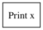
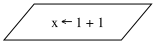
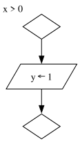
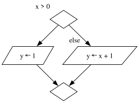
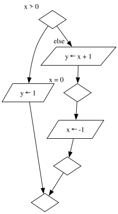
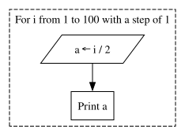
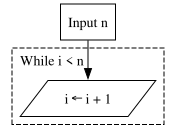

The principle of LDA
LDA or " Langage Descriptif d'algorithmes " . Is a kind of language using basic shapes and natural language to describe the basic working flow of an algorithm. It has nothing to do with UML Class Diagram or SysML, because UML describe class structure and SysML the interaction of one or multiple user with a system, they are useful but higher level graphs.
Instruction statement
An instruction statement represent a basic instruction that does not contain any branching, assignment or loop principle. It contains functions calls, calculations, and basic I/O verbs. The instruction statement is a node with a box shape and a label in it containing the said instruction
instruction [label="Print x" shape=box]

Variable assignment
The variable assignment live up to its name. It represent a variable getting a new value. The variable assignment is a node with a parallelogram shape and a label containing the assignation instruction. Note that the right side of the assignment can be anything from a function call, to a calculation. For example, if I assign some x variable to be 1+1 It will be :
variable [label="x ← 1 + 1" shape=parallelogram]

Conditional statements
The Conditional flow, basic of all programs. It allow to branch the program under multiple path based on a condition. The conditional statement is constructed using one opening diamond node and a closing diamond node. For example, let's say I want to set a variable y to 1 if another variable x is greater than 0.
start_if [xlabel="x > 0" label="" shape=diamond]
end_if [label="" shape=diamond]
assign_y [label="y ← 1" shape=parallelogram]
start_if -> assign_y -> end_if

Here we use xlabel because it is convenient, it allow us to write text outside of the node, but keeping it not to far from the said node, and all of that without doing any kind of position calculations. From this, we can represent an else statement.
The else statement is represented by another edge coming out from the initial condition diamond, this edge must lead to an instructions finnaly the last elst instruction must connect to the closing diamond node. Taking back my the previous example, imagine I want to assign y to x+1 if x is lesser or equal than 0.
start_if [xlabel="x > 0" label="" shape=diamond]
end_if [label="" shape=diamond]
assign_y [label="y ← 1" shape=parallelogram]
update_y [label="y ← x + 1" shape=parallelogram]
start_if -> assign_y -> end_if
start_if -> update_y [xlabel="else"]
update_y -> end_if

From this, you can get the representation of an else if ( or elif, for my pythonic friends reading ), you just have to include another if branch below the else.
start_if [xlabel="x > 0" label="" shape=diamond]
end_if [label="" shape=diamond]
start_elif [xlabel="x = 0" label="" shape=diamond]
end_elif [label="" shape=diamond]
assign_y [label="y ← 1" shape=parallelogram]
update_y [label="y ← x + 1" shape=parallelogram]
update_x [label="x ← -1" shape=parallelogram]
start_if -> assign_y -> end_if
start_if -> update_y [xlabel="else"]
update_y -> start_elif -> update_x -> end_elif -> end_if

For loop
The For loop is a kind of iterative function to apply when you know exactly how much iteration you need to solve a problem. A for-loop is made using a subgraph cluster because of its unique styling. This cluster is dashed and contain a label with the number of iteration and the step. For example, if I want to enumerate how much is the half of every number between 1 and 100.
subgraph cluster_0
{
label="For i from 1 to 100 with a step of 1"
labeljust=l
style=dashed
set_a [label="a ← i / 2", shape=parallelogram]
print_result [label="Print a"]
set_a -> print_result
}

While loop
The last graph entry covered will be the While loop. As for the for-loop it is an iterative function, but you use it when the end of the loop depend on a condition. Just like the for-loop it is made using a subgraph cluster because of its unique styling. This cluster is dashed however the label contain the exit condition. For example if I want to exit my loop when an i variable is greater than some arbitrary nnumber I will write :
input [label="Input n", shape=box]
subgraph cluster_0
{
label="While i > n"
labeljust=l
style=dashed
update_i [label="i ← i + 1" shape=parallelogram]
}
input -> update_i
